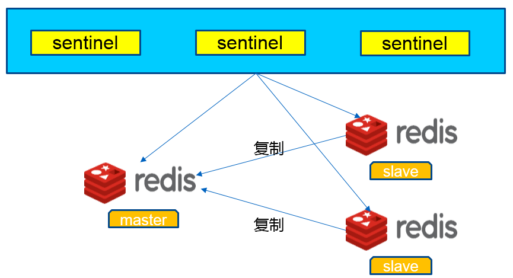
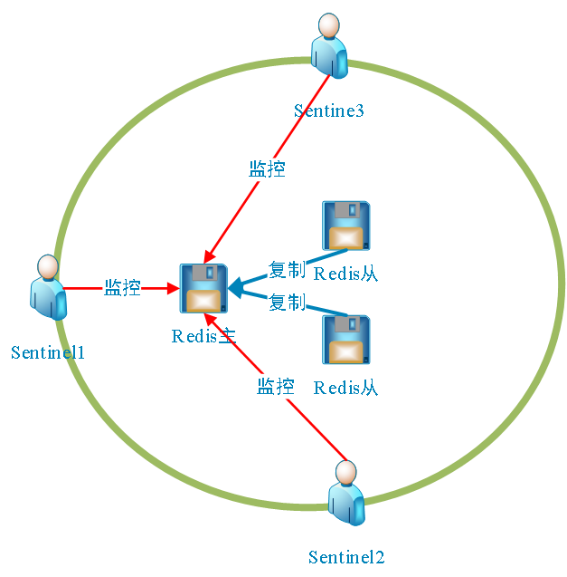
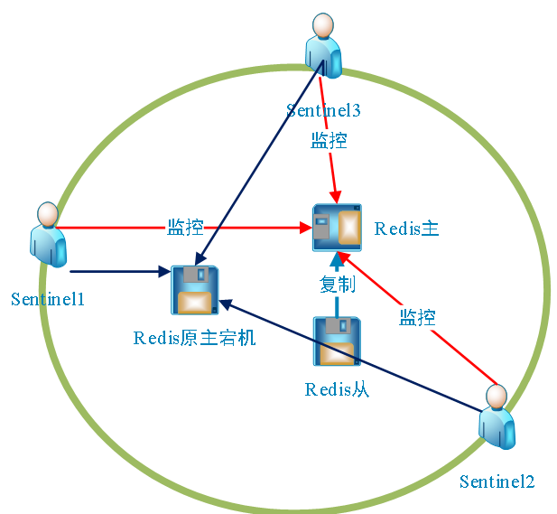

1. redis-sentinel
1. 介绍¶
REmote DIctionary Server(Redis) 是一个由Salvatore Sanfilippo写的key-value存储系统。Redis是一个开源的使用ANSI C语言编写、遵守BSD协议、支持网络、可基于内存亦可持久化的日志型、Key-Value数据库，并提供多种语言的API。它通常被称为数据结构服务器，因为值（value）可以是 字符串(String), 哈希(Map), 列表(list), 集合(sets) 和 有序集合(sorted sets)等类型。Redis 是完全开源免费的，遵守BSD协议，是一个高性能的key-value数据库。Redis 与其他 key - value 缓存产品有以下三个特点：
- Redis支持数据的持久化，可以将内存中的数据保持在磁盘中，重启的时候可以再次加载进行使用。
- Redis不仅仅支持简单的key-value类型的数据，同时还提供list，set，zset，hash等数据结构的存储。
- Redis支持数据的备份，即master-slave模式的数据备份。
1.1 优势¶
- 性能极高 – Redis能读的速度是110000次/s,写的速度是81000次/s 。
- 丰富的数据类型–Redis支持二进制案例的 Strings, Lists, Hashes, Sets 及 Ordered Sets 数据类型操作。
- 原子 – Redis的所有操作都是原子性的，同时Redis还支持对几个操作全并后的原子性执行。
- 丰富的特性 – Redis还支持 publish/subscribe, 通知, key 过期等等特性。
1.2 比较¶
Redis与其他key-value存储有什么不同 - Redis有着更为复杂的数据结构并且提供对他们的原子性操作，这是一个不同于其他数据库的进化路径。Redis的数据类型都是基于基本数据结构的同时对程序员透明，无需进行额外的抽象。 - Redis运行在内存中但是可以持久化到磁盘，所以在对不同数据集进行高速读写时需要权衡内存，应为数据量不能大于硬件内存。在内存数据库方面的另一个优点是， 相比在磁盘上相同的复杂的数据结构，在内存中操作起来非常简单，这样Redis可以做很多内部复杂性很强的事情。 同时，在磁盘格式方面他们是紧凑的以追加的方式产生的，因为他们并不需要进行随机访问。
2. redis sentinel 介绍¶
2.1 Sentinel是什么¶
用于监视master是否正常在线，若果说master挂掉了，Sentinel会让其中一个slave顶上去。
2.2 开多少个Sentinel合适¶
开3个Sentinel，或者说开奇数个，Sentinel的原理就是一直监视着master是否在线，如果是挂掉，Sentinel的集群追选举其中一个领头Sentinel，然后由于领头的Sentinel执行slaveof命令让slave作为master，然后Sentinel集群机选监视新的master，老的master还是会一直监视着如果启动了那么老的master会做为新的master的slave
2.3 Sentinel判断master下线的两种标准¶
- 主观下线
Sentinel发现master没有在指定时间返回信息，这种情况呗认为主观下线。[指定时间：这个时间是我们设置的]
- 客观下线
sentinel询问Sentinel集群，篮下其他的Sentinel是否也标记这个master是否下线如果标记Sentinel下线的个数达到一个阈值，Sentinel会将master标记为主观下线，这时候会选取领头的Sentinel，由Sentinel选取master下面的一个slave去作为新的master。
3. 准备¶
3.1 条件¶
实验环境: 1主两从，3个Sentinel
3.2 配置¶
设置Sentinel四个条件:
- IP
- 下线阀值
- slave个数
- 恢复时长
3.2.1 ip地址¶
你要监视主服务器的ip地址，以及设置Sentinel标记客观下线的阈值
Note
sentinel monitor <被监控的名字也就是run_id> <ip> <port> <团体号> sentinel monitor mymaster 127.0.0.1 6379 2
3.2.2 下线阀值¶
Note
Sentinel认为主观下线的一个阈值 sentinel down-after-milliseconds mymaster 30000
3.2.3 slave个数¶
Note
故障恢复期间可以同时slave的个数 sentinel parallel-syncs mymaster 1
3.2.3 恢复时长¶
Note
故障恢复允许的最大时长 sentinel failover-timeout mymaster 180000
4. redis sentinel¶
4.1 环境准备¶
采用同一网络内的三台docker主机（可以是物理主机、虚拟机或docker容器），要求三台主机之间都能相互访问，每一台主机上都安装redis-server、redis-sentinel。redis-server负责提供Redis缓存服务，三台主机间的关系是master-slave-slave,redis-sentinel负责提供Redis高可用，VIP始终在redis-server master上，保证对上层应用可写可读。三台主机的冗余度是1，也就是说当有一台主机宕机时另外两台中至少有一台主机可以提供Redis缓存服务。

如图所示，有三台主机，分别标识为Redis1、Redis2、Redis3，它们的角色和配置等信息如下：
| 主机标识 | IP地址 | 预设角色 |
|---|---|---|
| 172.17.0.6 | redis-server redis-sentinel | vip |
| 172.17.0.14 | redis-server redis-sentinel | |
| 172.17.0.16 | redis-server redis-sentinel |
Redis主从系统，除了做数据冗余，开可以做高可用性灾备。Reids提供了Sentinel工具来监控各Master的状态，如果Master异常，则会做主从切换，将slave作为master，将master作为slave。主从切换之后，master_redis.conf、slave_redis.conf和sentinel.conf的内容都会发生改变。master_redis.conf中会多了一句slaveof的配置，sentinel.conf的监控目标也随之调换，这一点要注意。
4.2 操作流程¶
整体流程如下几个步骤，以下我使用docker安装，宿主机类似。 - 启动三台ubuntu12.04 64位镜像作为docker容器 - 安装依赖包 - 安装tcl8.6.1 - 安装redis3.0.2 - 配置redis一主两从模式 - 测试redis一主两从 - 配置sentinel监控 - 测试sentinel监控模式 - 启动redis程序 - 启动sentinel监控程序 - 测试及排错
4.3 拓扑演变¶
4.3.1 开始模式¶

开始的三个sentinel监控一个redis的主。当redis主宕机以后，架构图又变了模式。
4.3.2 master宕机¶
Master redis宕机后，新主启动，在master redis在指定时间没有响应，三个sentinel仲裁有两人认为下线此时仲裁处新主redis，启动新的master redis后，sentinel同时监控老的master redis。

4.3.3 master修复后¶
当原来的master redis恢复后，此时原来的主就自动变成从去自动同步新的主，架构模式恢复成以下。

4.4 启动镜像¶
启动镜像
root@leco:~# docker run -itd --privileged -p 36379:6379 -p 36380:26379 -v /usr/local/src/ sentienl1 bash root@leco:~# docker run -itd --privileged -p 36381:6379 -p 36382:26379 -v /usr/local/src/ sentienl2 bash root@leco:~# docker run -itd --privileged -p 36383:6379 -p 36384:26379 -v /usr/local/src/ sentienl3 bash
Note
此时端口映射出redis的端口6379和sentinel的端口26379到宿主机。 --privileged 是获取至高无上的root权限。 -v是数据卷管理。 -d是后台方式运行，为了在容器内exit后容器不退出。
注意
我只列出安装了其中一个docker里面的依赖包其他两docker安装一样。目的是利于测试，最后可以卸载在制作成新的镜像时候。
4.5.2 安装tcl 包¶
root@8d7240ab9c47:~# tar xzvf tcl8.6.1-src.tar.gz -C /usr/local/ root@8d7240ab9c47:~# cd /usr/local/tcl8.6.1/unix root@8d7240ab9c47:~# ./configure root@8d7240ab9c47:~# make root@8d7240ab9c47:~# make install
4.5.3 安装redis¶
root@8d7240ab9c47:~# tar xvfz redis-3.0.2.tar.gz root@8d7240ab9c47:~# cd redis-3.0.2 root@8d7240ab9c47:~# make root@8d7240ab9c47:~# cd src root@8d7240ab9c47:~# make install root@8d7240ab9c47:~# make PREFIX=/usr/local/redis install root@8d7240ab9c47:~# useradd -s /sbin/nologin redis root@8d7240ab9c47:~# mkdir /usr/local/redis/var root@8d7240ab9c47:~# chmod 777 /usr/local/redis/var/ root@8d7240ab9c47:~# mkdir -p /usr/local/redis/etc #放置配置文件地方
注意
我只列出安装了其中一个docker里面的redis,tcl，此时先做为主，其他两从redis docker安装一样。
4.6 配置主从¶
4.6.1 主从配置¶
- Master redis.conf配置文件修改
root@8d7240ab9c47:~# cat /usr/local/redis/etc/redis.conf daemonize yes # 后台运行 pidfile "/usr/local/redis/var/redis.pid" # 运行pid文件 port 6379 # 端口 timeout 300 # 超时 loglevel debug # debug模式 logfile "/usr/local/redis/var/redis.log" # 日志文件 databases 16 save 900 1 save 300 10 save 60 10000 rdbcompression yes dbfilename "dump.rdb" dir "/usr/local/redis/var" appendonly no appendfsync always bind 0.0.0.0 # 方式ip限制
- Slave1 redis.conf配置文件修改
root@38b072848ccd:/# cat /usr/local/redis/etc/redis.conf daemonize yes pidfile "/usr/local/redis/var/redis.pid" port 6379 timeout 300 loglevel debug logfile "/usr/local/redis/var/redis.log" databases 16 save 900 1 save 300 10 save 60 10000 rdbcompression yes dbfilename "dump.rdb" dir "/usr/local/redis/var" appendonly no appendfsync always bind 0.0.0.0 slaveof 172.17.0.2 6379 # master ip
- Slave2 redis.conf配置文件修改
root@56c0344c59a0:/# cat /usr/local/redis/etc/redis.conf daemonize yes pidfile "/usr/local/redis/var/redis.pid" port 6379 timeout 300 loglevel debug logfile "/usr/local/redis/var/redis.log" databases 16 save 900 1 save 300 10 save 60 10000 rdbcompression yes dbfilename "dump.rdb" dir "/usr/local/redis/var" appendonly no appendfsync always bind 0.0.0.0 slaveof 172.17.0.2 6379
特别注意
一定要修这个为0.0.0.0 否则宿主机连接不到docker容器里面的redis
- 启动脚本
[root@linux-node2 init.d]# cat /etc/init.d/redis
#!/bin/sh
#
# Simple Redis init.d script conceived to work on Linux systems
# as it does use of the /proc filesystem.
# chkconfig: 2345 90 10
# description: Redis is a persistent key-value database
#
REDISPORT=6379
EXEC=/usr/local/bin/redis-server
CLIEXEC=/usr/local/bin/redis-cli
PIDFILE=/var/run/redis_${REDISPORT}.pid
#CONF="/etc/redis/${REDISPORT}.conf"
CONF="/usr/local/redis/etc/redis.conf"
case "$1" in
start)
if [ -f $PIDFILE ]
then
echo "$PIDFILE exists, process is already running or crashed"
else
echo "Starting Redis server..."
$EXEC $CONF
echo $(ps aux|grep redis|grep -v grep|grep 6379|awk '{print $2}')>$PIDFILE
fi
;;
stop)
if [ ! -f $PIDFILE ]
then
echo "$PIDFILE does not exist, process is not running"
else
PID=$(cat $PIDFILE)
echo "Stopping ..."
$CLIEXEC -p $REDISPORT shutdown
while [ -x /proc/${PID} ]
do
echo "Waiting for Redis to shutdown ..."
sleep 1
done
echo "Redis stopped"
cd /var/run/ && rm -f redis_${REDISPORT}.pid
fi
;;
*)
echo "Please use start or stop as first argument"
;;
esac
[root@linux-node2 init.d]# chmod +x /etc/init.d/redis
4.7 启动¶
4.7.1 启动¶
#root@8d7240ab9c47:~# redis-server /usr/local/redis/etc/redis.conf root@8d7240ab9c47:~# /etc/init.d/redis start Starting Redis server...
4.7.2 停止¶
#root@8d7240ab9c47:~# redis-cli shutdown root@8d7240ab9c47:~# /etc/init.d/redis stop
注意
其他两个从redis启动方式一样。
4.8 测试主从¶
保证三台redis都启动后，查看
127.0.0.1:6379> info 。。。。。。 # Replication role:master connected_slaves:2 slave0:ip=172.17.0.6,port=6379,state=online,offset=10912,lag=0 slave1:ip=172.17.0.4,port=6379,state=online,offset=10912,lag=0 。。。。。。
4.8.1 主上设置一个键值对¶
127.0.0.1:6379> set realcloud 1234 OK 127.0.0.1:6379> get realcloud "1234"
4.8.2 Redis slave1查看¶
127.0.0.1:6379> get realcloud "1234"
4.8.2 Redis slave2查看¶
127.0.0.1:6379> get realcloud "1234"
4.8 配置sentinel¶
三台机器的配置文件都一样。
4.8.1 配置sentinel¶
root@8d7240ab9c47:~# cat /usr/local/redis/etc/sentinel.conf port 26379 dir /usr/local/redis/var_sentinel sentinel monitor mymaster 172.17.0.2 6379 2 #该IP是redis主的IP。根据情况改写。 sentinel down-after-milliseconds mymaster 10000 sentinel parallel-syncs mymaster 1 sentinel failover-timeout mymaster 60000 #sentinel client-reconfig-script mymaster /script/failover.sh
4.8.2 启动 sentinel¶
root@8d7240ab9c47:~#mkdir /usr/local/redis/var_sentinel root@8d7240ab9c47:~# redis-sentinel /usr/local/redis/etc/sentinel.conf >/usr/local/redis/var_sentinel/sentinel.log &
4.8.3 查看¶
在主redis上进入sentinel。
root@8d7240ab9c47:~# redis-cli -p 26379 127.0.0.1:26379> sentinel master mymaster 1) "name" 2) "mymaster" 3) "ip" 4) "172.17.0.2" 5) "port" 6) "6379" 7) "runid" 8) "eb05e2906f6e3f916fbca5f3f3e421560f2bbf21" 9) "flags" 10) "master" 11) "pending-commands" 12) "0" 13) "last-ping-sent" 14) "0" 15) "last-ok-ping-reply" 16) "451" 17) "last-ping-reply" 18) "451" 19) "down-after-milliseconds" 20) "10000" 21) "info-refresh" 22) "3492" 23) "role-reported" 24) "master" 25) "role-reported-time" 26) "5854962" 27) "config-epoch" 28) "0" 29) "num-slaves" 30) "2" 31) "num-other-sentinels" 32) "2" 33) "quorum" 34) "2" 35) "failover-timeout" 36) "60000" 37) "parallel-syncs" 38) "1" 127.0.0.1:26379>
注意
redis的默认端口是6379 redis-sentinel 默认端口是26379
4.9 故障模拟¶
4.9.1 master宕机¶
root@8d7240ab9c47:~# redis-cli shutdown #主宕机
4.9.2 查看redis主从情况¶
root@38b072848ccd:~# redis-cli info #此时为master root@56c0344c59a0:~# redis-cli info
4.9.3 查看sentinel情况¶
root@38b072848ccd:~# redis-cli -p 26379 127.0.0.1:26379> sentinel master mymaster 1) "name" 2) "mymaster" 3) "ip" 4) "172.17.0.4" 5) "port" 6) "6379"
此时在kill当前的master。Sentinel在指定时间内又众筹出当前新的master。当之前的master 又启动好以后sentinel又主动将之前的master添加到新的master中，作为slave。目前为止redis的sentinel测试OK。